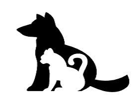
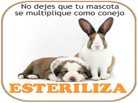

More Website Templates @ TemplateMonster.com - November 14, 2011!
ADOPCIÓN
Adopata un amigo.
Campaña de sensibilización para que las personas no sigan comprando animales y adquieran un verdadero amigo con nosotros, puedes acercarte a cualquiera de nuestros puntos o atreves de nuestras redes sociales.
ESTERILIZACIÓN
Esteriliza y no abandones.
Campaña de esterilización para evitar la reproducción masiva de animales que al final resultaran en la calle se realiza tanto como para felinos y caninos, hembras y machos y no tiene ningún costo en nuestra fundación.
EDUCACIÓN
Educa al hombre.
Campaña de educación tanto para animales como para sus amos, el abandono parte del cansancio de sus dueños por los malos comportamientos de sus mascotas por tal motivo se realiza estas capacitaciones.